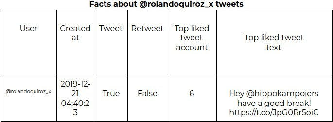

Featured on
Check out some of Tweets's "Virality" Analyzer features
Get timeline statics
Get access to your timeline generated from your Tweeter posting activity in an illustrative format. Your timeline shows a stream of your posted Tweets. You can see Retweets, or likes a Tweet from within your timeline in a historical data plot.

Know key facts
Get relevant info in a short, easy and agile way because you know that for Twitter to be verbose is not an option. If you can answer questions like What?, How?, When? then you can learn about the right and the wrong things that you have done with your Twitter account.
Do better tweets
Improve the impact and diffusion for your new Twitter posts
Hey @hippokampoiers have a good break! pic.twitter.com/JpG0Rr5oiC
— Rolando Quiroz (@rolandoquiroz_x) December 21, 2019